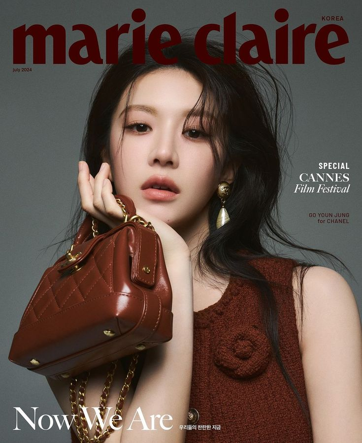

K-ARCHIVE is a digital sanctuary dedicated to the intersection of Korean heritage and contemporary luxury. We don't just follow trends; we document the evolution of an era.
Born in the heart of Seoul, our mission is to provide a curated perspective on the icons and aesthetics shaping the global fashion landscape.
We prioritize direct collaborations and verified archives to ensure every story is told with integrity.
Looking past the seasonal noise to find the timeless elements of the Korean creative wave.
A global bridge for those who see fashion as a form of cultural dialogue.